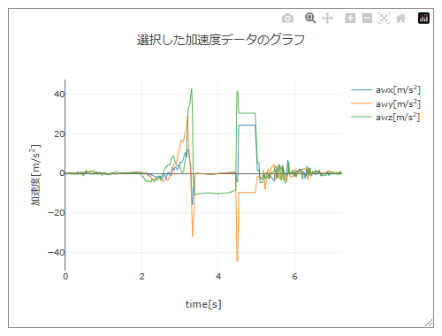
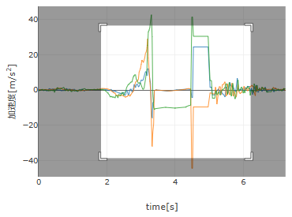
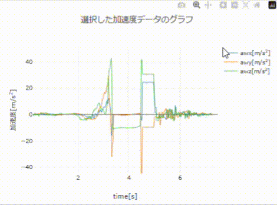
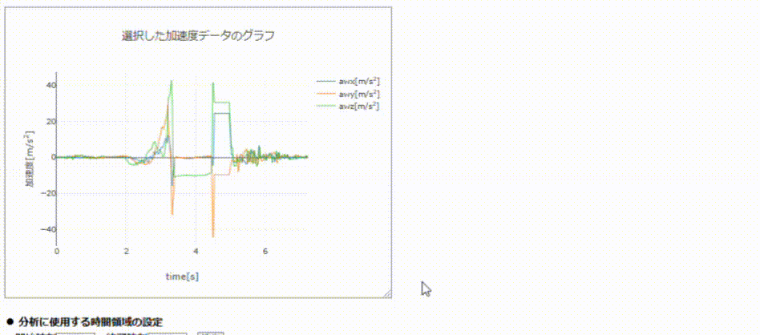

【操作方法】
■ グラフの調整・出力
本アプリのグラフは，フリーのチャート作成JavaScriptライブラリ Plotly.js (ver.2.35.2) を用いて描画している．PCで本アプリを開いている場合，表示されたグラフ上にマウスカーソルをもっていくと，下図のようにグラフの右上にグラフオプションのボタンが現れる（スマートフォンで本アプリを開いている場合，ボタンは常に表示されている）．

グラフオプションのボタン
グラフオプションのボタン
| 【ボタンの機能の説明】 | |
|---|---|
| 【カメラボタン】グラフをpng形式で画像として保存する．カメラボタンをクリックすると，ブラウザで設定しているダウンロードフォルダに「newplot.png」というファイル名で保存される． | |
|
【ズームモードボタン」ズームモードに切り替える（ズームモードとパンモードがあり，デフォルトはズームモードである）．ズームモードにおいて，下図のようにグラフの一部の領域を選択すると，その部分が拡大されてグラフ領域全体に表示される．
ズームする範囲を選択する

選択した範囲が拡大される

|
|
|
【パンモードボタン】パンモードに切り替える（ズームモードとパンモードがあり，デフォルトはズームモードである）．パンモードにおいて，下図のようにグラフ上でクリックしながらマウスを動かすと，グラフの表示範囲が移動する． 
|
|
| 【ズームインボタン】ボタンを押すごとに，表示されているグラフの中心に向かってズームインしていく． | |
| 【ズームアウトボタン】ボタンを押すごとに，表示されているグラフの中心からズームアウトしていく． | |
| 【オートスケールボタン】すべてのデータを表示するようにレイアウトを変更する． | |
| 【リセットボタン】最初に表示したレイアウトに戻る．本アプリで表示されるグラフにおいては，オートスケールボタンとリセットボタンは全く同じ働きをする． | |
● グラフ領域のサイズの変更
下図のように，グラフ領域の枠の右下をクリックしながらマウスを動かすと，グラフ領域のサイズを変更することができる．サイズを変更すると，右下に横幅と縦幅のサイズが赤字で小さく表示される．
